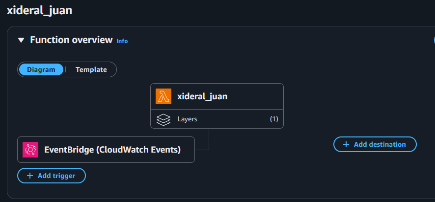
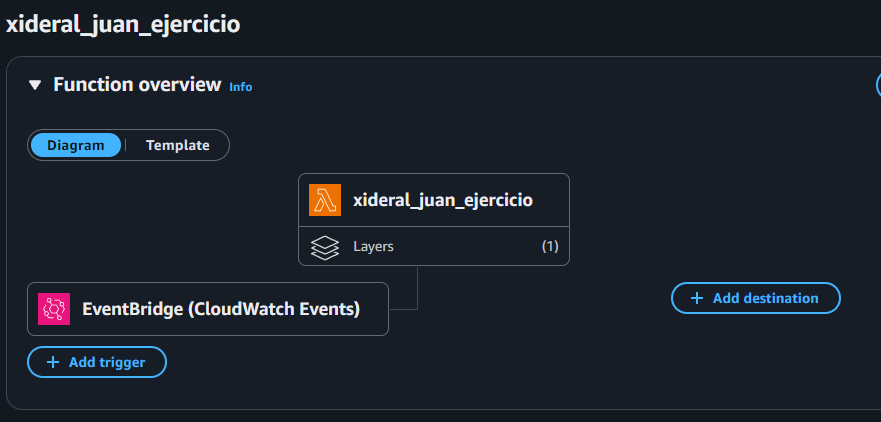
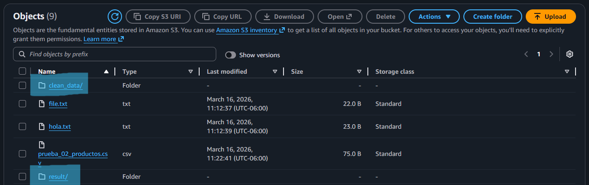

Flujo del pipeline
Triggers programados
Lambda 1 — Limpieza del dataset
Esta función lee el archivo prueba_02_productos.csv
directamente del bucket S3, delega la limpieza al módulo auxiliar
dataset_utils
y guarda el resultado limpio en la carpeta clean_data/ del mismo bucket.
import json
import boto3
import pandas as pd
import io
import os
from dataset_utils import clean_dataset
s3 = boto3.client("s3")
def lambda_handler(event, context):
bucket = os.getenv("BUCKET_NAME")
key = "prueba_02_productos.csv"
response = s3.get_object(Bucket=bucket, Key=key)
contenido = response["Body"].read().decode("utf-8")
df = pd.read_csv(io.StringIO(contenido))
df = clean_dataset(df)
output_key = "clean_data/prueba_02_productos_clean.csv"
s3.put_object(
Bucket=bucket,
Key=output_key,
Body=df.to_csv(index=False).encode("utf-8")
)
return {
'statusCode': 200,
'body': json.dumps({"message": f"Archivo limpio guardado en {output_key}"})
}Módulo auxiliar — dataset_utils.py
Archivo de apoyo importado por la Lambda 1. Contiene la función
clean_dataset
que elimina filas con valores nulos y filas duplicadas del DataFrame recibido.
import pandas as pd
def clean_dataset(df):
df = df.dropna()
df = df.drop_duplicates()
return dfDataset — Input y Output de la Lambda 1
📄 Input — prueba_02_productos.csv
| producto | precio | stock |
|---|---|---|
| Lapiz | 10 | 100 |
| Cuaderno | 25 | 50 |
| Borrador | null | 30 |
| Regla | 15 | 20 |
✅ Output — prueba_02_productos_clean.csv
| producto | precio | stock |
|---|---|---|
| Lapiz | 10.0 | 100 |
| Cuaderno | 25.0 | 50 |
| Regla | 15.0 | 20 |
↑ La fila de Borrador fue eliminada por tener precio null.
Lambda 2 — Conteo de filas y reporte JSON
La segunda Lambda lee el CSV limpio desde clean_data/,
cuenta sus filas y guarda un JSON de resultado en la carpeta
result/.
Soporta tanto eventos de S3 como pruebas manuales mediante un parámetro de fallback.
import json
import boto3
import pandas as pd
import io
import os
s3 = boto3.client("s3")
def lambda_handler(event, context):
bucket = os.getenv("BUCKET_NAME")
# Caso 1: evento de S3
if "Records" in event:
key = event["Records"][0]["s3"]["object"]["key"]
else:
# Caso 2: prueba manual
key = "clean_data/prueba_02_productos_clean.csv"
response = s3.get_object(Bucket=bucket, Key=key)
contenido = response["Body"].read().decode("utf-8")
df = pd.read_csv(io.StringIO(contenido))
total_filas = len(df)
result = {"archivo": key, "total_filas": total_filas}
result_key = f"result/{os.path.basename(key).replace('.csv', '_count.json')}"
s3.put_object(
Bucket=bucket,
Key=result_key,
Body=json.dumps(result).encode("utf-8"),
ContentType="application/json"
)
return {
"statusCode": 200,
"body": json.dumps({"message": f"Resultado guardado en {result_key}"})
}Resultado — resultado.json
Archivo JSON generado por la Lambda 2 y almacenado en la carpeta
result/
del bucket. Confirma el archivo procesado y el total de filas limpias encontradas.
{
"archivo": "clean_data/prueba_02_productos_clean.csv",
"total_filas": 3
}Estructura generada en S3
Tras la ejecución del pipeline, el bucket queda organizado con las carpetas
clean_data/
y
result/
creadas automáticamente por cada Lambda.
Capturas de la ejecución


